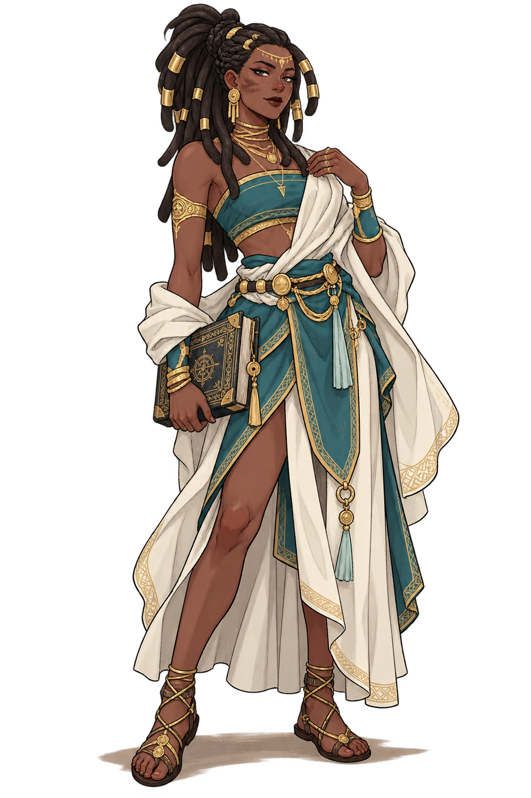

TODAY’S MOVEMENT ↗
0 steps
Your first step starts it all◎
Every step writes a little more of your story.
Great stories begin
with small steps.
One level for every 500 XP.
Your pace. Your adventure.

You don’t have to be legendary.
You just have to begin.
CLASS & ANCESTRY ARE COSMETIC · YOUR EFFORT DEFINES YOUR LEVEL
✧A little movement goes a long way.
Walk 2,000 steps today
Check in at your saved daily spot
Reach a 3-day activity streak
Steps earn 5 XP per 100. Quest progress reflects that XP; no extra bonus.
You choose what to share.
Manual steps available
Apple Health and Android Health Connect require a native companion app. For now, enter your daily step total.
Only when you choose
Optional GPS walks and daily spot check-ins. Your location stays on this device.